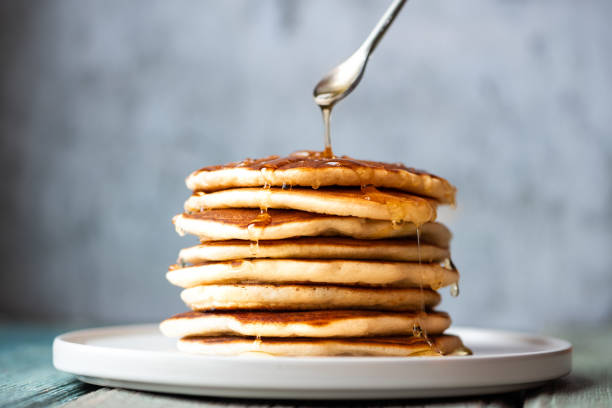

Pancake
Return

Ingredients
- 1 cup all-purpose flour
- 1 tablespoon sugar
- 1 teaspoon baking powder
- ½ teaspoon baking soda
- ¼ teaspoon salt
- 1 cup milk
- 1 egg
- 2 tablespoons melted butter (or oil)
- ½ teaspoon vanilla extract (optional)
How to make pancakes
- Mix dry ingredients – In a bowl, whisk together flour, sugar, baking powder, baking soda, and salt.
- Prepare wet ingredients – In another bowl, mix milk, egg, melted butter, and vanilla extract.
- Combine and mix – Pour the wet ingredients into the dry ingredients and mix until just combined (don’t overmix; lumps are okay).
- Cook the pancakes – Heat a non-stick pan over medium heat and lightly grease with butter or oil. Pour about ¼ cup of batter for each pancake. Cook until bubbles form on the surface, then flip and cook for another 1-2 minutes.
- Serve and enjoy – Stack the pancakes, top with syrup, butter, or fruits, and enjoy! 🥞😋